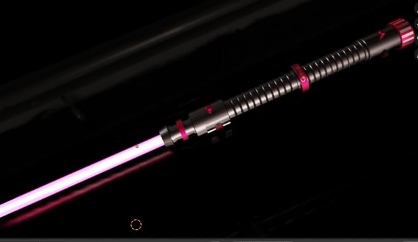

Página principal
PORTAFOLIO DE TRABAJO

Este es mi logotipo el que usaré mientras esté estudiando la carrera, trae mis colores favoritos y mis iniciales a pesar de ser un logo muy sencillo siento que me identifica y es el que pondré en mis futuras redes sociales.
TRABAJOS HECHOS POR MI
Ilustraciones:

Este es una ilustración que hice, fue una de los primeros dibujos y me gustó demasiado el resultado, por ahora sigo perfeccionando mi tactica a la hora de hacer diseños o dibujos por medio de redes sociales, video o en mi carrera.
MODELADOS EN 3D
